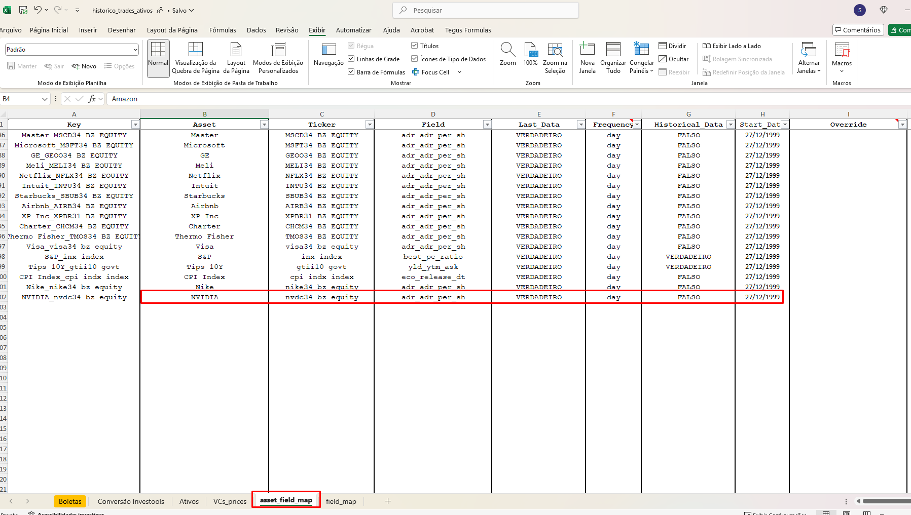

Adicionar novo ativo¶
1. Atualizar historico_trades_ativos.xlsx¶
Para adicionar um novo ativo, é necessário preencher uma nova linha da planilha:
source_bases/historico_trades_ativos.xlsx
na aba Ativos. Dependendo do ativo, pode procurar algum similar já cadastrado para auxiliar no preenchimento.
Com exceção das colunas Name e Class, a formatação de maiúsculas e minúsculas não importa, pois será padronizada para minúsculo dentro do código.
Campos da aba Ativos¶
-
Key
Não precisa preencher, pois já está com fórmula. É Concatenação da colunaAssetcom a colunaTicker. -
Name
Nome do ativo como deseja ver nos relatórios. A formatação de caixa alta/baixa é mantida conforme inserido. -
Asset
Nome do ativo.- Caso Venture Capital, preencher com
VC USouVC BZ.
- Caso Venture Capital, preencher com
-
Ticker
Ticker do ativo.- Será usado para consulta de preços quando não houver
Ticker_BBG. - Para BDRs, coloque o ticker da BDR com
"bz equity"ao final.
- Será usado para consulta de preços quando não houver
-
BTG_Name
Nome conforme vem na carteira do BTG, para cruzamento durante a conciliação. -
Manager
Nome do gestor, usado na regra de agrupamento dos ilíquidos na carteira online. -
Luxor_Classification
Filtro para segmentos de retornos da Luxor com um destes valores:
debt,equity fund,fees,fixed income,fx,hedge funds,
others,private equity,stocks,vc. -
Luxor_Equity_Classification
Subsegmento para retornos da Luxor:equity,non equity,debt,others. -
Luxor_Inner_Classification
Subsegmento interno (pode ficar em branco):
br equity fund,cash,debt,fees & others,iliquids,
ip atlas,others,s&p500 etf,spx eagle,spx hawker,
stocks,tci. -
Class
(LEGACY) Usado no relatório antigo de attribution. Mantém formatação e não está em uso. -
Type
Classificação mais específica, usada noportfolio_builderpara métricas. Exemplos:
fundos_fia,benchmark,bond,ações_us,ações_BDR,equity_fund,
etf,fundo_fia,fundo_mm,luxor custom,ntnb,fixed income,
luxor,private equity,term debt,vc bz,vc us,caixa us,
taxa adm,curncy. -
Group
Classificação geral, usada noportfolio_builder. Exemplos:
ações,benchmark,fundos,termo,cripto,equity_fund,
fundos mm,fundos_fia,fx,loan,luxor,luxor custom,
margin cash,ntbn,private equity,rf_privada,
taxas e custos,vc. -
Ticker_BBG
Ticker Bloomberg (ex.:MSFT US Equity).- Para BDRs, use o ticker da empresa de referência (ex.:
MSFT US Equitypara MSFT34).
- Para BDRs, use o ticker da empresa de referência (ex.:
-
Currency Exposure
Código de 2 letras da moeda de exposição (ex.:us,bz). -
Location
Código de 2 letras do país da bolsa (ex.:us,bz,uk). -
Ignore Flag
(discontinuada) deixar em branco. -
Disable BDP
PreencherTruepara não consultar preços intraday no Bloomberg (BDP). -
Inception Date
(discontinuada) pode deixar em branco ou preencher com01/01/1990. -
Hist_Price
VERDADEIROouFALSOpara ativar consulta de preços históricos (BDH). -
Frequency
Frequência de atualização intraday:minute,hourouday. -
Liquidity_Rule
Liquidez em dias (não esta em uso).
BDR adicional
Quando o ativo novo for um BDR, insira na aba asset_field_map uma nova linha com:
- Asset e Ticker do ativo
- Field:adr_adr_per_sh
- Last_Data:VERDADEIRO
- Frequency:dayIsto atualiza diariamente o peso do BDR (quantos BDRs equivalem a 1 ação) para a base bdr_sizes. 
Salve e feche a planilha. O run_luxorASAP.py irá disparar o pipeline automaticamente. Verifique se ele está rodando caso as tabelas não sejam atualizadas após alguns minutos.
2. Atualizar Operation_Desk_V4.xlsm¶
Para inserir o ativo na carteira online e na planilha de trading, atualize:
carteira_online/production/bases_input/Operation_Desk_V4.xlsm
-
Na aba
Ativosda planilhaOperation_Desk_V4.xlsm:- Insira os dados do novo ativo.
- Copie para as colunas 'Asset', 'Ticker', 'Tipo', 'Grupo', 'Ticker_BBG', 'Currency Exposure' e 'Location' exatamente os dados inseridos na planilha
historico_trades_ativos.xlsx.
-
Nas abas dos fundos:
- Abra a aba de cada fundo que investirá no ativo.
- Insira uma nova linha preenchendo apenas as colunas Asset e Ticker.
- As demais colunas (
Quantidade,Tipo,Grupo,Mkt Value) possuem fórmulas que serão ativadas automaticamente. Caso não aconteça, replique a fórmula das células da linha imediatamente anterior.
Quando o ativo inserido for BDR
Na abauteis, mapeie o peso do BDR em relação ao ticker do BDR. Colocar quantas ações equivalem a 1 BDR.
Importante: Certifique-se de que a coluna
Ticker_BBGna abaAtivosdaOperation_Desk_V4.xlsmesteja preenchida com o ticker da empresa de referência (ex:MSFT US Equitypara MSFT34), e não o ticker do BDR.

3. Atualização de preços do novo ativo¶
Para ativos com Ticker_BBG no historico_trades_ativos.xlsx, o preço será automaticamente consultado no Bloomberg seguindo o fluxo explicado em Bloomberg Data Pipeline.
Já para ativos sem Ticker_BBG, consulte o guia para configurar uma nova fonte de preços.